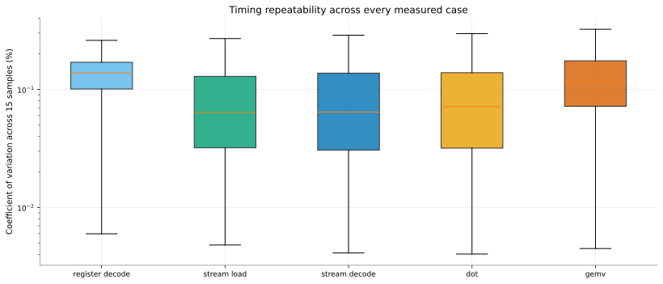

Methodology and data
How the timings and profiler measurements were collected, normalized, and kept separate.
Timing stability
This summarizes variability across all 2,142 cases after 10 warmups and interleaved sampling.

Definitions
Total time: CUDA-event median over 15 samples; DOT includes both reduction launches and GEMV includes its complete kernel.
Packing speedup: logical throughput for equal decoded values or useful operations. Register decode is compared in decoded values/s, fixing the unequal-work x1/x2/x4 normalization.
Roofline bytes: unique encoded storage. GEMV counts its vector once because Nsight confirms cache reuse; requested bytes remain available in the raw table.
Profiler data: only hardware counters are used. Replay-contaminated Nsight durations never replace event timing.